(2007-04-24 08:52:02)
前面在每天的行情分析中，曾不客气地说到，对于空头日夜盼望的暴跌，其实永远与空头无关，因为真跌了，空头就只会口头上快感一下，心理上满足一下，但人的思维惯性，使得空头永远没机会在他们满意的地方获得满意的筹码。
暴跌，对于牛市行情来说，就如同一夜情，猛烈而刺激，但实质上，一夜情就是一夜情，419后，该干什么还是什么。
就如同性能量的积聚，牛市调整能力的积聚，也需要宣泄。这种宣泄，与熊市最大的不同，就是419化。【韶山映山红】牛市就是快跌慢涨。】
419，总是猛烈而疯狂，否则就没必要419了。牛市中的调整也一样，来就狂风暴月，这和熊市中的大反弹是一样的。
最出名的熊市大反弹，大概就是停国债期货那次，三天，指数从550不到翻上920上，结果，后面依然继续下跌回来。
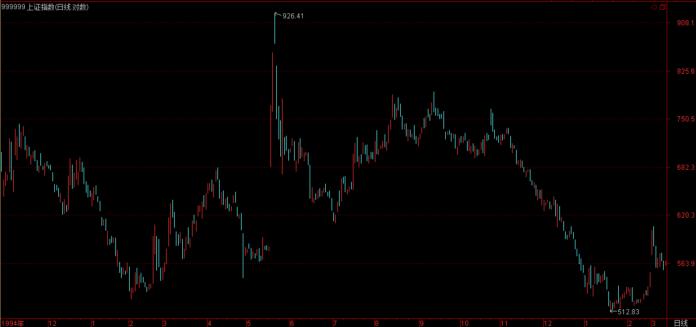
而牛市中的暴跌，最出名的算是96年12月那次，由于政策打击，连续跌停下来，1250点上几天跌到850点附近，结果依然继续上涨。
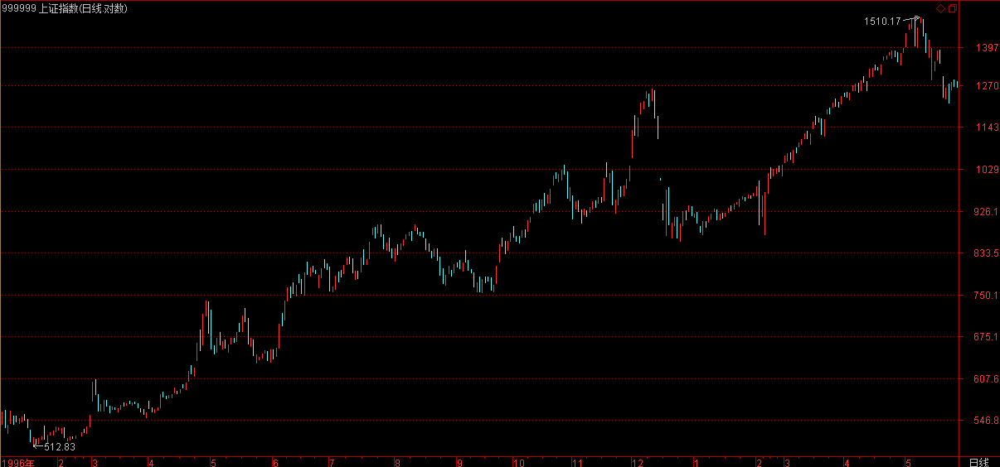
所有真正的大顶，都是反复冲击出来的，有足够的时间让你去反应判断，那种V型顶，在大型走势中基本不会构成真正的顶部，就如同一夜情最后天长地久的机会基本为0。【韶山映山红】什么级别会有真正顶部的“V型顶”？★以后研究。】
所以，那些天天希望暴跌的人，就如同天天期望一夜情的人一样，都有着滥交的潜意识倾向，滥交之人，最终都会给废掉，不会有好结果的。
【韶山映山红】若禅精舍（陈秋明）注：
分力结构的足够复杂，使指数的顶不可能是很突然的转向。2015年那种一是有杠杆的力量在起助推作用，二是那会的顶部其实在4月底就已经出现了，后面的上涨只是属于最后的惯性。
政策，不足以改变大的趋势，很多人说中国的股市是政策市，那是因为关注的周期短造成的假象。政策能够影响短期的波动，但大的趋势该干嘛干嘛。2008年9月份，中美两国联合救市，重磅利好出来也只制造了指数的两三天涨停，后面该下跌完成背驰段仍然要去完成。
所有的底部，都是市场大级别做多的合力与做空的合力逐步达到均衡的过程，所有的顶部亦如是。】
有一种对风险的错误观点，仿佛股价、市赢率高了才风险大，股价、市赢率低了就风险小了，却不知道股价、市赢率都是些变动的因数，并没有任何绝对的意义。
本ID曾多次强调，风险对于市场是绝对的，任何时候都在风险之中，如果你对本ID的理论能有所理解，那么，不仅能让风险在操作级别的绝对控制之中，而且还能利用风险达到降低成本。无风险是可以创造出来的，0成本就是绝对的无风险。如果不理解，那么最简单均线系统就可以控制住风险。
【韶山映山红】若禅精舍（陈秋明）注：
老话重提，很多人被缠论的所谓绝对性所迷障，却忘了即使是缠论，也不否认市场的任何时候都是有风险的，市场的运行从根本上来说是不可测的，只是构成绝对风险的奇点并不会每天都有而已。对于这种不可测的风险，从根上解决的办法就是让持有的筹码绝对无风险，也就是零成本持股。
缠论是围绕如何在一定时间内，将持股成本降低为零的理论，探讨的所有问题其实都围绕这一个目的，其他的各种单一层面的买卖点、结构、级别之类，不过是为了解决这个问题而产生的衍生品而已。所以短线的操作并不能避开市场波动的风险，只有建立在零成本持股目的的操作上，市场的风险才可以通过不断的操作而不断的降低。这是很多人都不清楚的。】
但站在社会财富增长的绝对性上，最大的风险就是你的财富增长赶不上社会平均财富的增长，站在资本市场这个子系统，道理是一样的。
因此，在一个大牛市中，筹码的积累甚至更重要。一个大的上涨，3元有1万股，到4元只有1千股，后来到了30，一股没有，这就是最大的风险，因为市场的上涨并没有为你制造应该的总体利润，你的筹码丧失了，没有筹码，在市场中就没有赢利的准入证，在没有做空机制的市场中，做空最后还是为了做多，除非你永远退出市场，特别在牛市行情依然的情况下，这点更重要了。没有筹码，用嘴是赢利不了的。
最好的情况，当然就是前面所说的，在成本为0前不断降低成本，在成本为0后不断挣筹码，这样股价越上涨，你的筹码越多，你的真正市值才会越来越大。
有人问本ID，你以后怎么出货，本ID反问，为什么要出货？每一次震荡，都成了本ID降低成本、增加筹码的机会，知道最高的境界是什么吗？就是等大牛市真正结束那天，你拥有股票的数量最多而成本是0，然后，（后面删去419字）。【韶山映山红】该砸盘的时候，这些0成本的股票就是最好的砸盘武器。砸到极限，再收回。】
市场从来不是慈善场所，要战胜市场，必须有正确的大思路与总体的方法。
【韶山映山红】若禅精舍（陈秋明）注：
这样的操作需要很好的耐性，而很多人之所以进入股市，恰恰就是因为缺少耐性，所以想在股市里实现暴富。不能说这种心理是有罪的，但真正能够在股市里实现长期稳定盈利，并实现财富自由的人，一定不会是个急功近利者。
对某个股票进行长期的降成本操作，是一个入门难，但后面的路很简单的时间，如果碰到大行情不好，可能实现零成本的时间会特别长，当然真正的高手并不会在行情不好的时候去搞这种高难度的事情。但即使是牛市，在不依靠主升浪的情况下，依靠盘整去把持股成本变成零，也是一个相对漫长的事情，这方面对耐心的要求就已经排除掉九成的人了。
在任何行业领域中，做到顶尖的始终是少数人，这和什么技术、老师、教材、家世之类的外围因素没有关系，那些都只能起到助推的力量，比如说没有外围有利因素要十年，但有了这些因素可能只要五年。根本性、决定性的力量，在于人本身，卓越的人是少数的，决定了各个领域中的顶尖是少数。有志于在股市里有所成就，或者有志于在任何行业有所成就的人，一定要端正这种思维方式，根本性、决定性的力量，是你自己本身。指望认识个什么大能量的人，然后就一飞冲天出人头地的，这种思路本身充满了投机的色彩，是一种弱者的思维方式，哪有真正的强者是抱着弱者心态的！】
正确去对待震荡、调整，【韶山映山红】震荡、调整，都是走势的必然，无须害怕，需要做多，是规避，是利用。】显然，在大盘中短线能量耗尽后，大盘会出现大规模的调整，【韶山映山红】能量有大小，也有持续时间，反映到走势上，也就有了不同的规模和持续时间。中短线能量耗尽，大盘会出现大规模的调整，这个大规模的调整，可能是持续时间，也可能只是幅度。】如果说227、419都是在日线上一夜情，【韶山映山红】这里说的227、419都是日线上的拉升之后的暴跌日。两个都是大幅度的调整，227以及之后的调整有一定的持续时间，而419之后就很短暂了。】
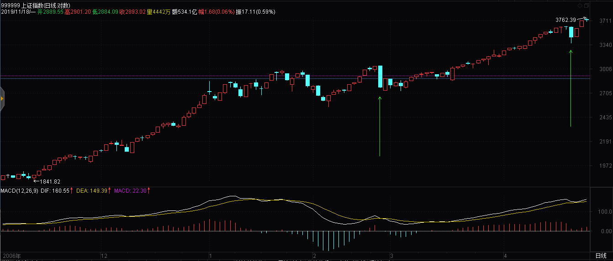
那么在周线上、月线上、季线上、甚至年线上出现一夜情的可能性在这长达至少20年以上的大牛市中，都是绝对存在的。【韶山映山红】2007年6124之后是年线的一夜情，2015年5178之后是季线的一夜情。2009年3478之后是月线的一夜情。】
但这决不是空头用嘴欢呼的借口，而是真正操作者减低成本、增加筹码的大好时机。【韶山映山红】暴跌之前，如果能判断背驰，就可以利用暴跌打短差。如果没做到，也可以在暴跌之后，做底部评估，加仓打短差。】
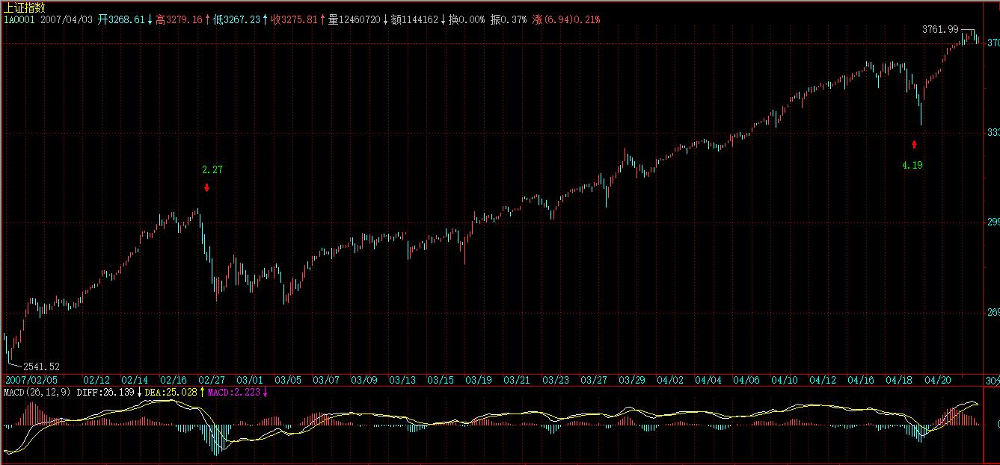
当然，操作的精确度是一个技术问题，技术高的，就能把成本降更低，筹码增得更多，这是绝对正常的事情，技术高的就该有更好的收益，这是天经地义的。
但精确度是可以用市场磨练来达到的，而思路、方法的错误，则是不可救药的，这才是问题的根源。
站在纯技术的角度，把握一夜情的级别很重要。一个日线上的一夜情与一个年线上的一夜情，显然力度上不一样。
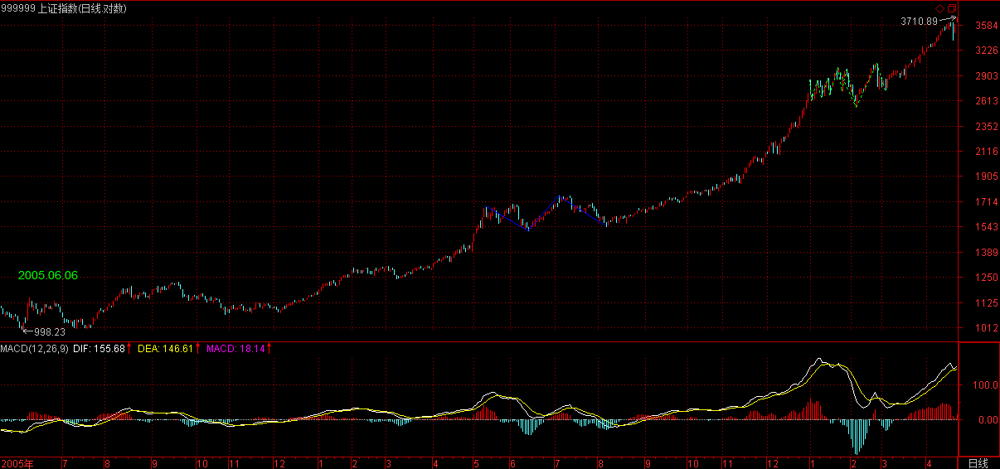
在这次从2005年中开始的大牛市行情中，至今为止，本质上，在周线上都没有出现过一夜情的暴跌，周线上两次大的调整，周跌幅都是7%，还赶不上227的日一夜情，
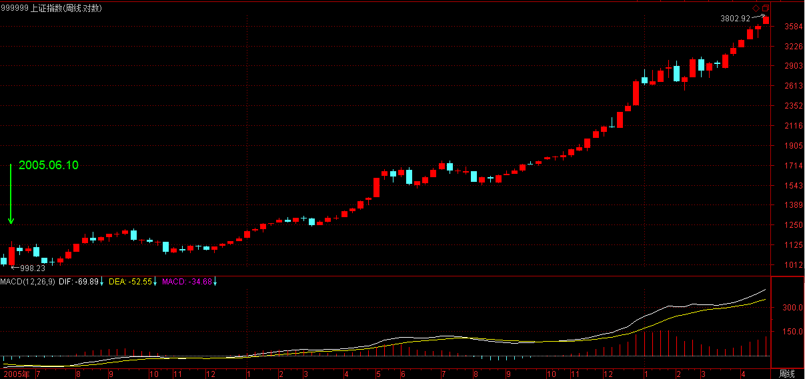
月线上更是连一次真正有意义的下跌都没有。
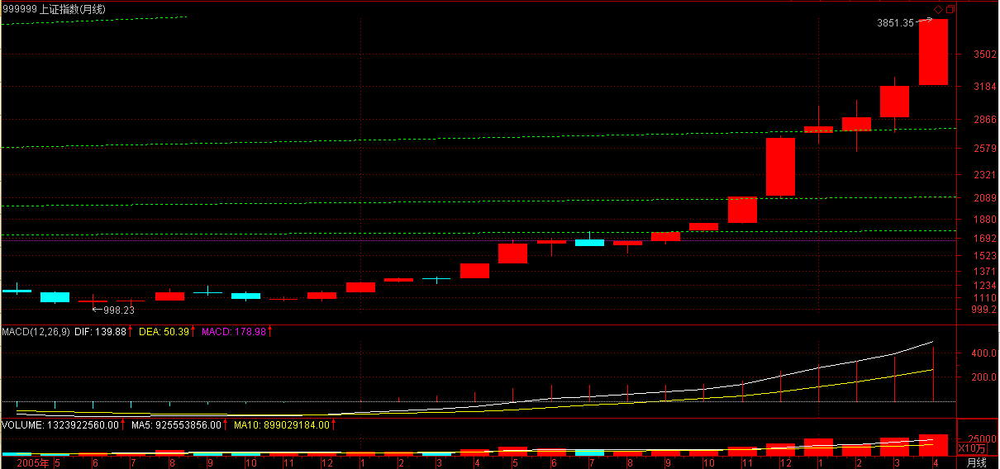
但为什么这么多人，天天依然如惊弓之鸟一般？
【韶山映山红】若禅精舍（陈秋明）注：
战略的正确，优先于战役的胜利。诚然，战略的胜利都是无数小战役成功累积出来的，但缺少战略的方向指导，再多小战役的成功也不足以完成最后的宏图。每天忙忙碌碌而不知道去思考的人，最终的结果大概也是碌碌。而方向正确了，即使过程曲折些，但在战役层面无论是成功还是失败，都是在为战略上的更进一步而添砖加瓦，熟悉历史的人一定有这种体会。这些道理，在股市里，都是相同的，所谓的大道至简，指的其实就是这些。
做任何事情之前，认识自己是最重要的，清楚知道自己的能力范围，在舒适区活动，在不舒适的区域求以进步，是一个不断累积的过程，所谓的刻意练习就是如此，任何专家都是这样过来的，并不稀奇。而在股市里，要做的，就是在舒适区赚钱，在不舒适的区域刻意练习以求将不舒适的区域变为下一个舒适区，只有经过这样经过精心安排的路线，才能让自己能够把握的行情越来越多，在市场里也就越来越游刃有余。】
如果你把握不住日线的一夜情，证明你的技术程度达不到把握日线一夜情的程度，那么就去把握周线、月线的，那对技术精确的要求要低。
给自己安排一些力所能及的活动，一夜情也是有级别的，能否在各级别的一夜情中游刃有余，是对你技术把握度的考验。
事情往往相通，无论技术还是其他，精度都是干出来的。
今晚，是否也要419一把？
附录：
【韶山映山红】2007-4-24 15:23。】
今天大盘在昨天的一个小中枢3688到3692受到支持，
下午的5分钟盘整顶背驰，应该不难把握。
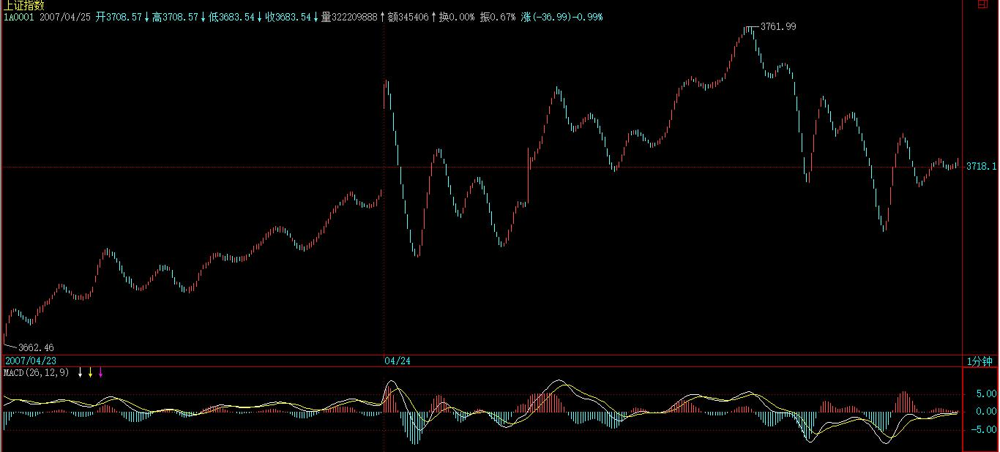
【韶山映山红】“下午的5分钟盘整顶背驰，应该不难把握。”这里是原文的第二个“盘整顶背驰”。从5分钟图上看，前面是连续的无中枢上涨，然后形成一个不严格的笔中枢，离开段有中枢类盘整背驰。这里的离开段不好说有没有三买，严格说没有，回踩破中枢了。★以后研究。】
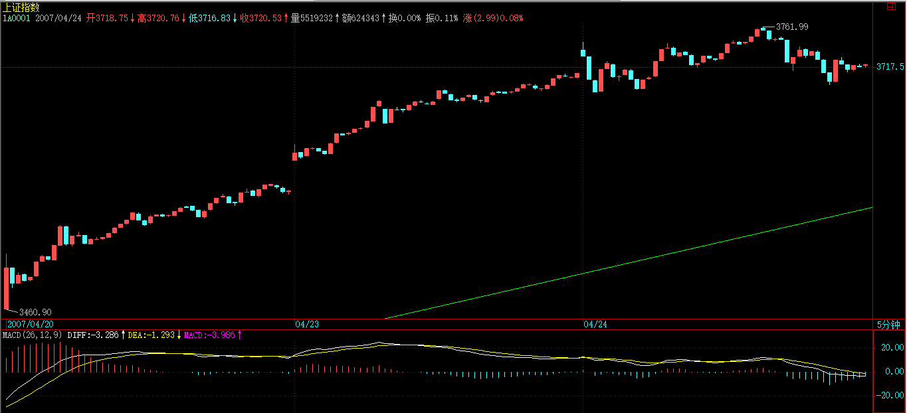
从这就知道，每天之间的当日走势，还是有一定技术意义的。
今天，一个平衡市，收得一般，
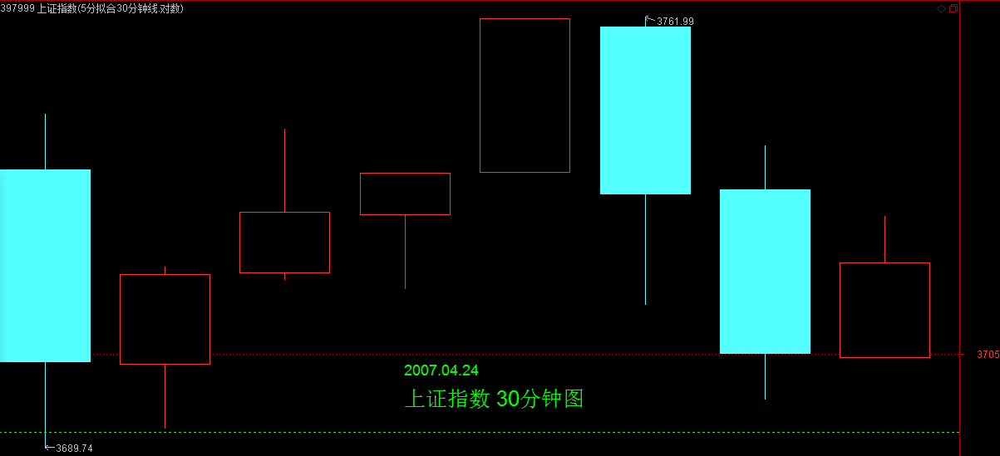
由于5日线明天就上来了，所以关键还是5日线，站稳就寻机上攻，否则就要受到昨天缺口的吸引。
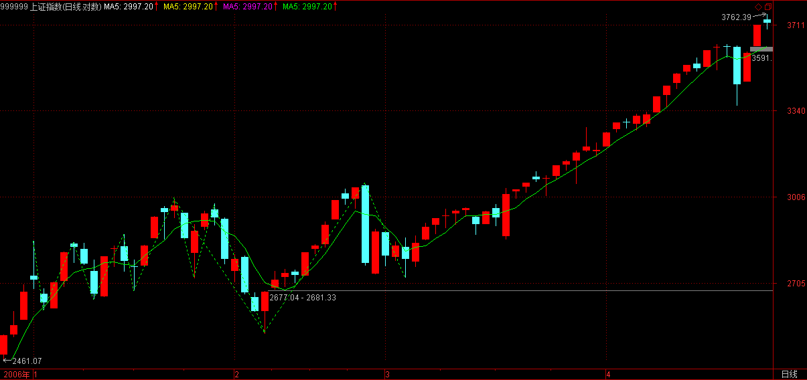
今天这种平衡市却是巨量的走势，【韶山映山红】缠师关于成交量的不多的描述之一。】关键就是要有效向上突破今天的中枢，否则大幅震荡不可避免。【韶山映山红】中枢震荡而放量，必有妖孽。】
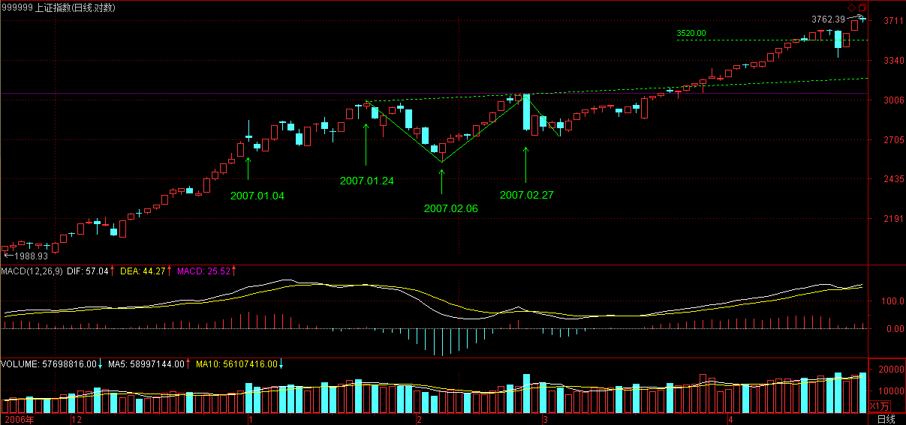
今后两天走势十分关键。睁大眼睛看好明后两天的走势，下面3688到3692小中枢不能有效被跌破。【韶山映山红】中枢的有效跌破，就是中枢下出现三卖。】

【韶山映山红】按照线段划分，这里也形成了一个区间很小的中枢。】
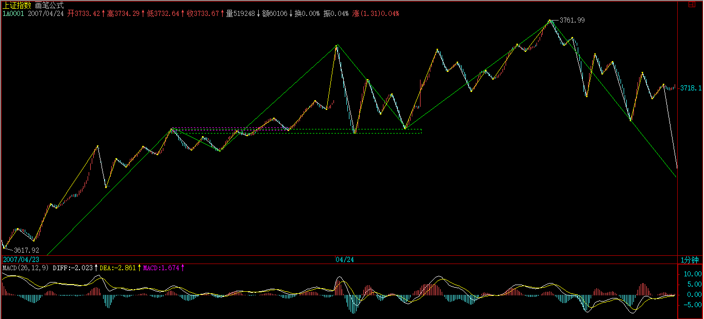
目前就是前面本ID所说，二线拉开空间，三线补上来的走势，但这种走势，必须有一个转换，使得成分股能重新启动，否则也是震荡难免。
目前走势，不要随意换股，该换的早该换了，否则T+1节奏一错就会大乱。
如果是短线的，就要注意今天中枢最后的演化方向来决定进出，中线的就无所谓了，看5周均线。
今天很忙，马上有事情要谈，晚上9点再上来回答问题，
先下，再见。
本文不针对任何具体日子走势，当日走势分析3点收盘给出。
先下，再见。
2007-4-24 08:55
[匿名] 蚕丝 2007-04-24 08:54:14
老大早上好！一看我的ID就知道我的来头啦，哈哈。我不怀疑这一整套理论的客观有效性，更羡慕你表达观点时的这份坦率，直白。但是说实话，真是蛮难理解运用好的，总之到目前为止我感觉还是朋友给的消息更管用些。景仰仍然是滔滔江水。。。来深圳出差的时候，给个机会容我请你去华侨城吃一家精致的小餐馆吧，轻轻松松聊聊天。我的电话：13828784409
PS：我这可不是葛优说行的号码哟，呵呵。。。
==
请不要在网上留电话，不排除有人会冒认本ID。请注意。
2007-4-24 08:56
今天大盘在昨天的一个小中枢3688到3692受到支持，下午的5分钟盘整顶背驰，应该不难把握。从这就知道，每天之间的当日走势，还是有一定技术意义的。今天，一个平衡市，收得一般，由于5日线明天就上来了，所以关键还是5日线，站稳就寻机上攻，否则就要受到昨天缺口的吸引。今天这种平衡市却是巨量的走势，关键就是要有效向上突破今天的中枢，否则大幅震荡不可避免。今后两天走势十分关键。睁大眼睛看好明后两天的走势，下面3688到3692小中枢不能有效被跌破。
目前就是前面本ID所说，二线拉开空间，三线补上来的走势，但这种走势，必须有一个转换，使得成分股能重新启动，否则也是震荡难免。
目前走势，不要随意换股，该换的早该换了，如果是短线的，就要注意今天中枢最后的演化方向来决定进出，中线的就无所谓了，看5周均线。
今天很忙，马上有事情要谈，晚上9点再上来回答问题，
先下，再见。
2007-4-24 15:23
各位好，晚一点，抱歉。
今天本ID博客的成交量似乎有异动，是不是有人玩了对手盘？
2007-4-24 21:12
[匿名] 技术学习ing 2007-04-24 21:09:32
睁大眼睛看好明后两天的走势，下面3688到3692小中枢不能有效被跌破。
请教LZ，怎么才算有效跌破？连续3个5分钟线收在3688下方？
==
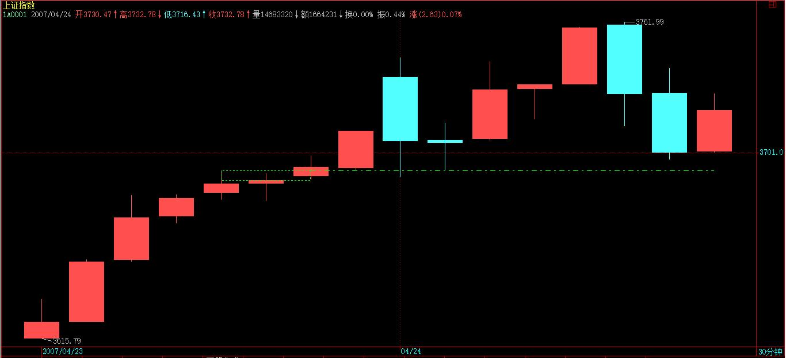
第一类卖点的最主动，第二也不错，第三就差点，如果整天都是第三再跑，那比较累，要尽量在第一、二跑。【韶山映山红】中枢的有效跌破，就是中枢下出现三卖。所以，并不是真的等有效跌破，而是一卖、二卖就要行动。】
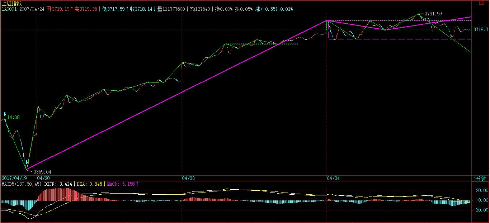
当然，级别越低，操作难度越大，需要的技术精确度越高，这需要实践来提高。
2007-4-24 21:15
[匿名] 白玉兰 2007-04-24 21:14:21
妹妹好！
下一阶段是否该关注二线指标股了？三线股要息菜了。
==
这转化还不一定能转过来，但关于杭萧那事的深入调整，题材股会有所收敛，本ID从事都反对把题材搞得太过分，这绝对需要打击。后面，个股的行情会进一步分化，说直白一点，后面肯定更多看里面各自的主力了，行情节奏逐步走向群庄乱舞。【韶山映山红】以后研究。★】
2007-4-24 21:22
[匿名] 上课啦我举手 2007-04-24 21:18:02
今天收市后到现在,到处都在说明天人民日报发社论,晕倒
博主在北京,人悉,消息灵,有没有什么政策面的东东?
==
如果现在还用这种手段，那是管理层的悲哀。【韶山映山红】时至今日，依然如此。】
2007-4-24 21:22
[匿名] 新浪网友 2007-04-24 21:21:46
银行股近期持续低迷，禅师怎么看。
==
那很正常，如果他们都高涨了，大家就很快没饭吃了。【韶山映山红】银行股的高涨是牛市的首、尾。★以后研究。】
2007-4-24 21:24
[匿名] 缠心雕龙 2007-04-24 21:22:10
47课原文：“你可以很明确地知道，在跌破10:30到13:30的中枢后，首先会有一个小的第三类卖点，小的第三类卖点后，有两种演化的可能……一个是形成下跌，至少再有两段向下……对于一个跌破中枢的下跌来说，第三类卖点后再来两波就可以随时完美。这个完美，由于该下跌是1分钟以下级别的，因此从该下跌的细部，是找不到根据1分钟背弛去确认的买点的，只可能根据分笔背驰。”
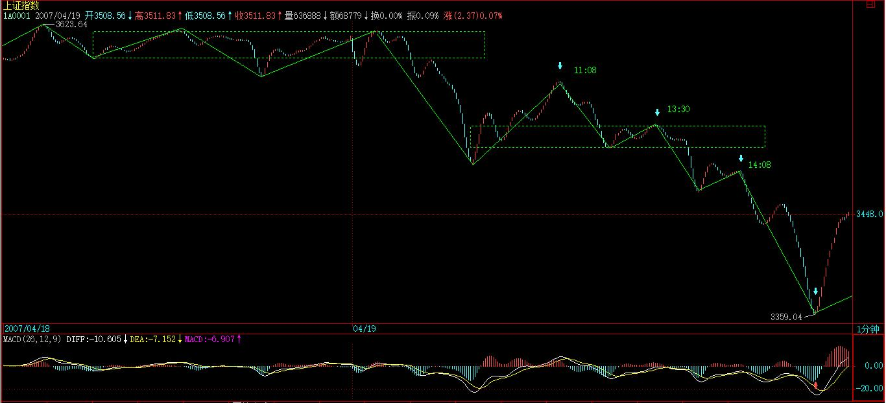
1、 在跌破10:30到13:30的中枢后的一个小的第三类卖点是不是在1408？【韶山映山红】是的。】
2、 为何说“对于一个跌破中枢的下跌来说，第三类卖点后再来两波就可以随时完美”？
3、 “这个完美，由于该下跌是1分钟以下级别的”，这里说的“该下跌”是从哪算起？是1f级别的吗？【韶山映山红】“该下跌”是离开中枢、回升不进中枢形成三卖之后的继续下跌。“是1分钟以下级别的”，是1分钟趋势的次级别。】
4、 13:30开始的下跌是1f级别的吗？他似乎并不是一个趋势，也没有1f背驰？【韶山映山红】“是1分钟以下级别的”，是1分钟趋势的次级别。】
==
对于趋势，有两个中枢后就可以随时结束，这是最基本的概念。【韶山映山红】回答“为何说‘对于一个跌破中枢的下跌来说，第三类卖点后再来两波就可以随时完美’？”】

盘中的这种下跌，基本都不会是1分钟级别的，更有可能就是1分钟以下级别的。【韶山映山红】回答“13:30开始的下跌是1f级别的吗？”】
而背驰的级别与趋势的级别不一定一样，这是一个最基本的概念，否则怎么会有小级别转大级别？【韶山映山红】回答“他似乎并不是一个趋势，也没有1f背驰？”没有背驰，却走出了背驰的效果，可以反过来推定发生了小转大。】
2007-4-24 21:29
[匿名] 首钢股份 2007-04-24 21:26:37
等女王！
今天突然很紧张，最终把所有股票卖出，空仓过夜，然而刚刚卖出600005随即它就大涨接近涨停。【韶山映山红】600005武钢股份。】
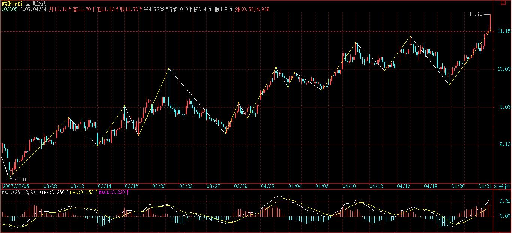
主要是下边的缺口太大了，最近几天又风传肯定要回补缺口，而个股面临一个20％跌幅的大调整，即使我做中线，这样的起伏也要不得。
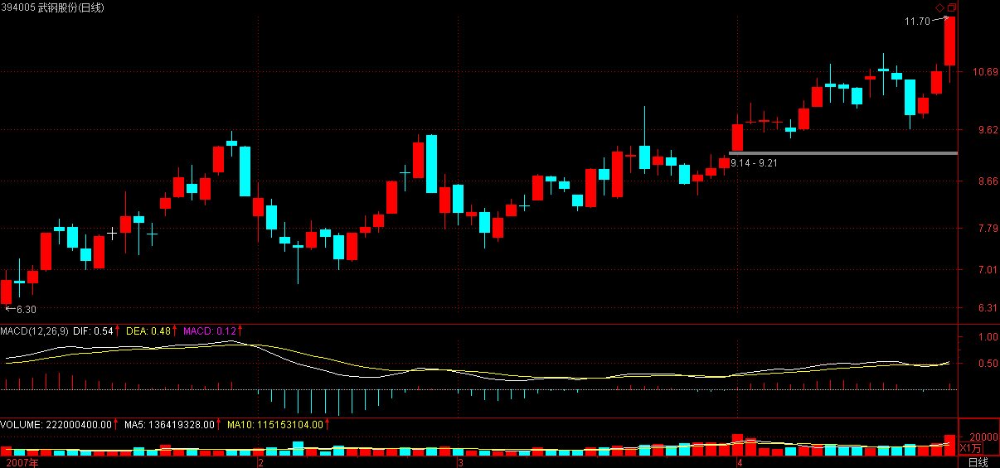
看图操作，但我的情况女王应该了解，我白天无法看图，更是电话委托，咱打不起短差也跑不快。不能跟大盘赌明天。
请问：若明天跟今天一样走势，是否仍不能确定站稳？具体出现什么情况才能认为后期将排除大盘整的可能？也就是说，什么叫做“有效跌破”和“有效站稳”？
==
这样操作其实更容易出错，5日线都没破，如果中线，5周线都没破，算得了什么？
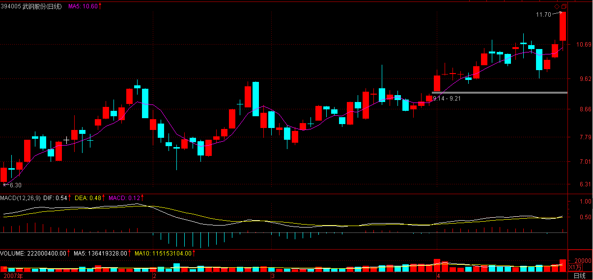
以后注意了，如果心情不好，特恐慌，人已经被恐惧所折磨，那就半仓，肯定不会错，这时候也别说什么技术了，心态先调节好再技术。
所以说人是第一位的，就算你明白了本ID的理论，能否应用成功，最终还是人的修炼。
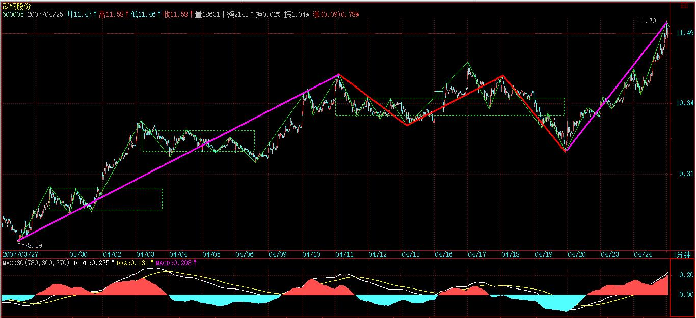
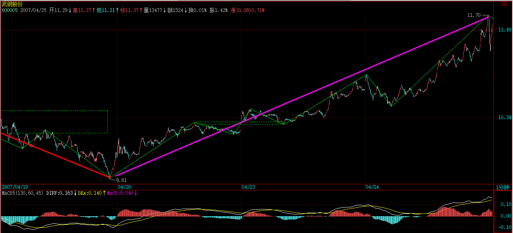
2007-4-24 21:33
[匿名] 小凤 2007-04-24 21:30:06
可否请缠女王推介一只股呢
==
股票是需要养大的，天天要新股票的，肯定永远是小资金，小打小闹。你看本ID年14只股票里，还有连续涨停的，为什么不好好养？
本ID现在不会推荐什么股票，主要是目前大盘的位置并不是什么值得去买股票的位置，而且本ID那14只还有不少中线潜力，但现在买没必要，因为不是好的买点。
2007-4-24 21:46
[匿名] 你的样子 2007-04-24 21:39:37
老大辛苦了，总算没白等
老大能不能解释下，那个小中枢是不是时间段在04.23 13:51到04.23 14:00，为什么这个小中枢是判断标志呢？
还有何谓有效击穿，是击穿后，反弹不能到达这个小中枢就是有效的意思？
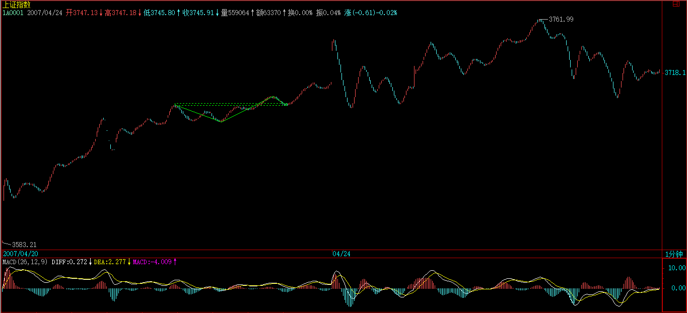
==
其实有效跌破与否与有没有第三类卖点是一个意思，【韶山映山红】也就是说，其实后面这一天都视为围绕那个小中枢的震荡，第三类买卖点就是对中枢的升破、跌破。】但最好就在第一、最多是第二卖点操作，毕竟第三卖点离真正的高位已经有距离了。
2007-4-24 21:50
注意了
本ID这里，除了最早说了14只股票，后来还陆续有北京股、【韶山映山红】000802北京旅游，2014.10.24变更为北京文化。】VC股，【韶山映山红】600635大众公用】深圳本地低价股，中小板袖珍股，这些股票都继续有中线潜力，但如果前面没买，现在追高买，一点必要都没有，本ID不需要别人抬轿子，本ID只希望大家都在买点，而且是级别大的买点再买。
如果出现一次较大的调整后，这些股票都会继续有如前面一样的表现的，所以机会是可以等待的，千万别追高。有的，就等待较大级别卖点的出现，卖点没出现的，就持有。
2007-4-24 22:00
对不起，大家注意了
上面漏说了一个最容易出黑马的板快，就是估计报坏业绩，但不跌反涨的，一旦大盘有调整，这些股票随着调整后，那么走势强劲的，将是后面的黑马。
全流通后，没有任何股票的业绩不可以做上去的，本ID这里就掌握了N只故意公布差业绩的公司的阴谋，但现在是监管时期，本ID不愿意惹麻烦，大家多加注意就是。
为了保险起见，如果没有特别准确的把握，不要买星号ST的，虽然本ID掌握的，有好几只这种股票，但不了解的就别买，否则买错了退市就很麻烦。
有心人，可以把那些故意业绩弄差的选出来，然后选择异动明显的，黑马不难发现，比让本ID直说有意思。
2007-4-24 22:06
[匿名] 诚诚 2007-04-24 22:02:23
今晚欧冠,我看好曼联不败.明晚,利物浦要用铁血阻击意欲雪耻的蓝军,精彩值得期待.看来缠主也不得不破例熬夜了吧?!
==
对，这两天，对于本ID来说，足球比股票重要，本ID准备熬两天了。不过11点前要睡一下，2点半起来。
2007-4-24 22:09
[匿名] 新浪网友 2007-04-24 21:47:41
老大，请教对于30分钟上涨的a+A+b+B+c+C，B必定是下上下形成，如果是上下上形成的中枢就可以把它看作b的一部分，对吗？
还有，如果b对c本级别不背驰，但是C中一个盘背c'导致下跌跌破C，这时候分解点是在c'还是c啊？这种情况算不算是小级别转大级别？谢谢
==
一般情况都是这样，如果有C中枢后，就意味着上涨延伸，和只有两个中枢的情况是一样的，参照该种情况就可以。【韶山映山红】a+A+b+B+c+C，可能走出d然后趋势背驰，可能走出d盘整背驰，也可能C的离开段就盘整背驰。不在于是B还是C，反正是分析最后一个中枢。】
2007-4-24 22:16
[匿名] 端一 2007-04-24 22:14:10
博主：科技股算二线股吗，怎么还不动，是不是等补涨？谢谢！
==
这问题在N月前已经说过，牛市第一波，最重要是成分股，第二波才是成长股，那时候科技股才是主角。【韶山映山红】科技股属于成长股。】
有人问，本ID14只里938、998怎么这么弱，那很自然，对这些股，本ID是作为整个牛市来布局的，本来第一波就没想着让他们太牛，但第二波时再看。
【韶山映山红】000938紫光股份。】
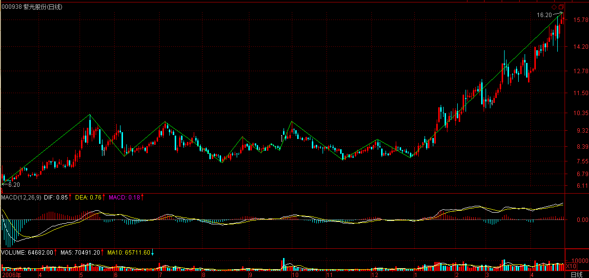
【韶山映山红】000998隆平高科。】
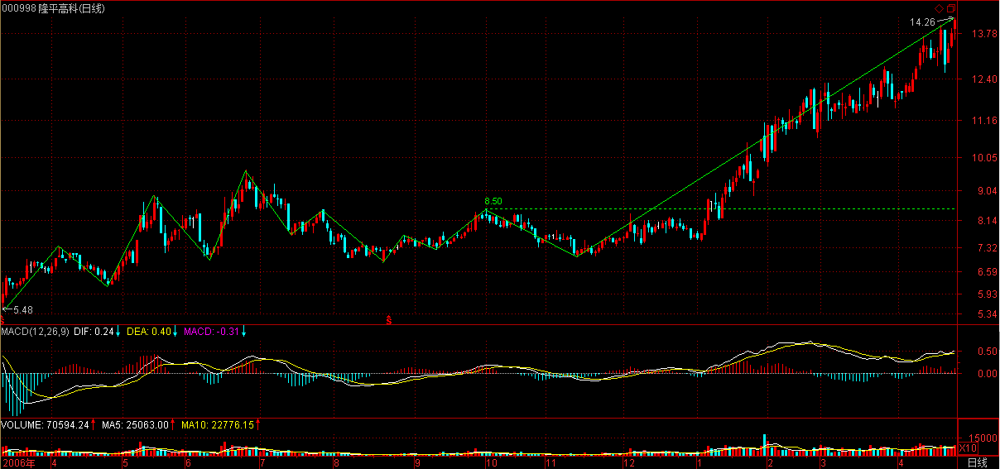
当然，第一波时，科技股也会跟着走，相对都会比较慢，其实各位不难发现，往往科技股一动，大盘就要准备调整了，这是一个市场节奏问题。【韶山映山红】市场节奏问题，可以做个专题。以后研究。】
2007-4-24 22:20
[匿名] 古代 2007-04-24 22:19:12
老师今晚曼联中国球员小董回上场不？
==
你这不等于骂AC？
2007-4-24 22:23
[匿名] 钢铁大道 2007-04-24 22:17:54
女王好，汇报一下今天的操作
今天下午盘中重仓了600021和600531，看到您对大盘的评述，十分忐忑，明日如果大盘调整，是继续中线持有，还是半仓操作。
谢女王
==
没有什么忐忑的，震荡是一个好玩的游戏，让不想51持股的出去也是很好的。
本ID给所有人的忠告就是，如果你觉得你的心脏受不了，最好的就是找机会半仓，或者就干脆不看，中线看5周均线就可以。
但对于技术好的，以及心态好的，上面的建议无效。
请注意，操作一定要量力而行，知道自己干什么，要承受什么后果，再行动。不要给自己太大压力，身体比股票重要。
2007-4-24 22:28
[匿名] 学缠人 2007-04-24 22:26:02
缠姐好!请问故意出坏业绩的是指年报出坏业绩还是一季度季度出坏业绩?谢谢!
==
都有可能。
对那些年报、季报业绩特别好的，后面却是明显出货走势的反而要小心【韶山映山红】什么样的走势是“出货走势”？★可以做个专题。以后研究。】
2007-4-24 22:31
PS：2007-04-24 21:44:45
缠MM 好！
汉奸的基金要被查到底了，它持有的股票是否应该都抛掉？
-----
缠妹。同问。请帮忙回答一下吧。谢谢！
==
关键是股票本身，汉奸出问题，会有短线影响，现在就希望汉奸都出来，大家都不待见他们。但中线不会受这些小问题影响。
2007-4-24 22:33
对不起，本ID要休息，2点45还要看球，AC、曼联，本ID都没什么特别爱好，那就让AC再让利物浦再屠杀一次吧。当然，理性告诉，走势有交替性，所以这种局面还真难出现。废话不说了。各位晚安。先下，再见。【韶山映山红】“走势有交替性”。交替。可以做个专题。以后研究。】
2007-4-24 22:36
漫漫学缠路
漫漫学缠路
去年底发现这个博，被缠J的中枢理论吸引，苦学至今已五月有余。
先是花了一个多月，才弄明白中枢、背驰、买点，以为自己懂了点，试着搞短差降成本，实践结果很受伤；
后来学了29课，俺才知道，最简单的趋势背驰后，演化也那么复杂；【韶山映山红】教你炒股票 29：转折的力度与级别(2007-02-09 15:08:08)】
后来学了32课，俺才知道，还要看当下，不能想当然；【韶山映山红】教你炒股票 32：走势的当下与投资者的思维方式(2007-02-28 08:44:37)】
后来学了33课，俺才知道，当下有多义性，不能一根筋；【韶山映山红】教你炒股票 33：走势的多义性 (2007-03-02 15:20:37)】
后来学了35课，俺才知道，自己基础很差，还好及时补补课；【韶山映山红】教你炒股票 35：给基础差的同学补补课(2007-03-09 11:51:34)】
后来学了36课，俺才知道，当下还有结合律，任何组合都符合理论，需要综合搞；【韶山映山红】教你炒股票 36：走势类型连接结合性的简单运用(2007-03-13 09:00:49)】
后来学了37课，俺才知道，当初根本就没真正搞懂什么是背驰；【韶山映山红】教你炒股票 37：背驰的再分辨 (2007-03-16 11:51:32)】
后来学了38课，俺才知道，走势分解还有同级与非同级一说；【韶山映山红】教你炒股票 38：走势类型连接的同级别分解(2007-03-21 15:23:21)】
后来学了39课，俺才知道，同级分解还得按韵律操作；【韶山映山红】教你炒股票 39：同级别分解再研究(2007-03-23 15:16:51)】
后来学了43课，俺才知道，最基础的背驰问题还是不太清楚，还要靠背驰做分解呢；【韶山映山红】教你炒股票 43：有关背驰的补习课(2007-04-06 15:31:28)】
后来学了44课，俺才知道，小级别背驰会引发大级别调整，操作复杂着呢；【韶山映山红】教你炒股票 44：小级别背驰引发大级别转折(2007-04-10 15:23:46)】
后来学了45课，俺才知道，第一个中枢结束后，走势随时可以结束，后面分类很复杂；【韶山映山红】教你炒股票 45：持股与持币，两种最基本的操作。(2007-04-12 15:39:04)】
后来学了47课，俺才知道，当下的分析原来这么复杂，而且这个范本还没全搞懂；【韶山映山红】教你炒股票 47：一夜情行情分析(2007-04-20 08:51:58)】
现在我终于明白：缠JJ，你的理论真的很复杂，我的技术学得真很烂，经历几次很受伤，俺决定不再短线了，等JJ把课都讲完再说。
拜托姐姐不要总说俺为何买点不买、卖点不卖，上上下下的享受是俺的无奈。
拜托JJ能快些讲，讲详细些，多举举例子，尽量让俺这样的笨学生能学明白点，也不枉这五个月的苦功。
2007-4-24 09:45
(2007-04-25 09:03:08)
央行有没有脑子，这是一个动物学问题，就不探讨了，不妨假设他有，如男猿人般，因此就有了脑子别进水的提醒。
本ID的观点从来都是一贯、究底穷源的，有人看到本ID最近不再反对人民币升值，以为本ID把前几年的观点给修正了。这是绝对错误的，本ID只关心那些可以实施、可被现实的观点，既然人民币已经升值了，这已经是现实了，再说些不升值就如何如何的废话是浪费网络资源。但这绝对不表示本ID已经觉得这升值就对了，本ID依然认为，这是中美货币战争的七七事变，是一次不光彩的勾当。
但七七之后就是八年抗战了，谁把并不太糟糕的事情一步步搞成这样，自然有历史可以去评价，本ID根本无须废话。
由于人民币的升值，美国逃过大难，有了喘息的机会，一个不可改变的事情就是，人民币升值以后，美国在战略上已经占了上风、先机，现在世界金融走势，本质上又进入美国人设计的轨道中，如果连这都认识不到，这样的央行可以改面首店了。
请问，某些人，曾经站在总体货币战争最高战略的角度考察过自己的战略战术安排吗？知道自己在干什么吗？其水平是否处处落后、频于应对？
现在，美国正按部就班把自己前面积累的危机逐步向全世界转化，其中的机理，某些人明白吗？知道人民币的升值使得本来要烂在美国国内的美国危机已经顺利地向全球转移吗？如果说伊拉克战争是一种军事上的危机转移，人民币升值就是另一场更深刻的经济上的危机转移，而且，美国人正走向成功。
当然，美国人并未真正成功，他们现在这种的策略，后面也是充满危险，但这危险已经可以让全世界去分担了，从本质上说，美国已经足够成功。后面的格局使得目前真正有意义的题目已经变成“美国危机转移下的中国货币战略”。
当然，如果战略得当，依然有让美国不能得逞的诸多机会，但本ID唯一担心的是，机会是需要去把握的，如果脑子都是水，能把握吗？
本ID可以毫不客气地说，这样一种情况正越来越可能变成现实，也就是，美国这已成功转化出去的危机，逐步把世界带向深渊，最后，在本ID所指出的大循环大震荡中，美国人又一次成为火凤凰。
这就如同打牌，本来一手好牌，最后让那抓着臭牌的给赢了，这算什么？
本ID早说过，本ID反左反右反中间，无论左右还是中间，一点技术含量都没有，在自己的臆想中玩3P，玩得鸡飞蛋打。
当然，站在私人利益上，因为股票，本ID绝对支持人民币升值，绝对支持所有人都脑子进水。本ID可以接受任何脑子进水的人制造的后果并利用之，但本ID依然要指出，如果脑子不进水，还有些什么的可能，即使这种可能实际上会损害本ID的私人利益，但钱对于本ID来说，早就是数字游戏了，本ID宁愿自己的私人利益受损、甚至生命安全受到威胁，也不愿意看到美国人与汉奸得逞。
本ID希望看到一个有技术含量的故事，而不是完全不对等的较量。
中国气运的强盛，就算是让美国一头，人民币升值了，也足以胜之。但前提是，不该有水的地方，水别太多。不管是央行还是洋行，脑子都不是必然要进水的。水太多，宁愿下半身思维掉、419掉，也别往脑子里装。
本ID才没有所谓爱之深、痛之切的矫情，爱谁谁去。
附录 当日分析：
【韶山映山红】2007-4-25 15:25。】
就算你对本ID的理论只有幼儿园水平，那今天的走势就一定难不到你。
一开盘的低开，然后很快拉回3688到3699的前天小中枢，
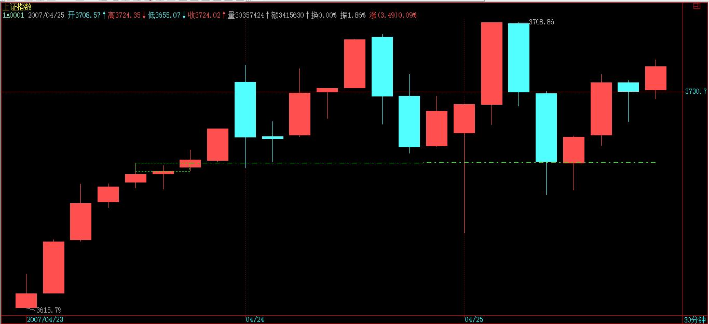
这就意味着，中枢震荡依然继续，没什么大问题。
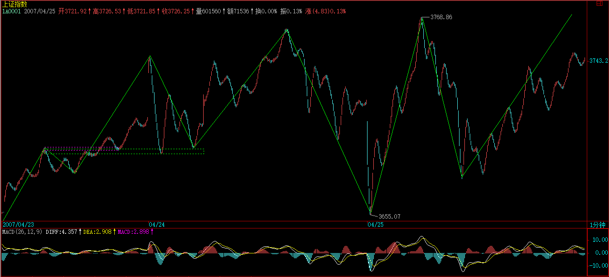
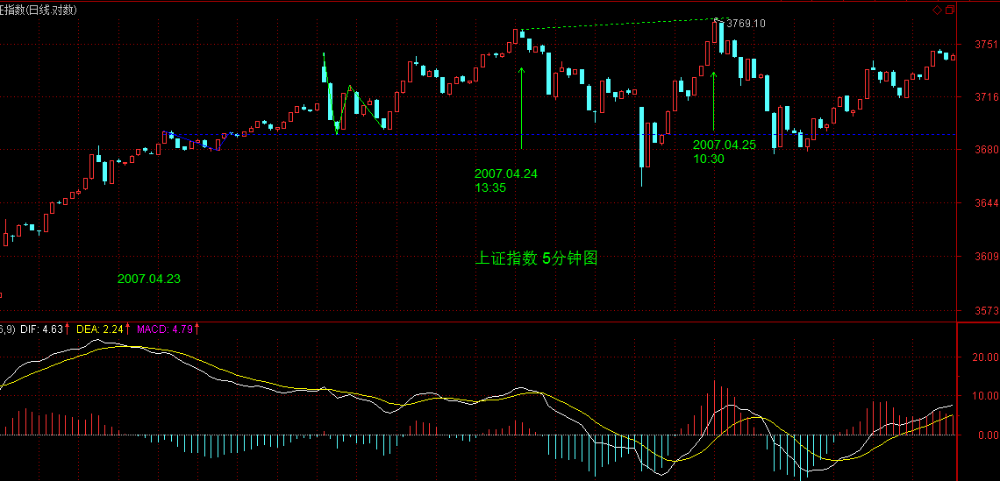
前三30分钟走出来后，这平衡市的形态以及震荡幅度就基本确立了，今天属于最平衡市那种，前三30分钟就确立全天高、低点，
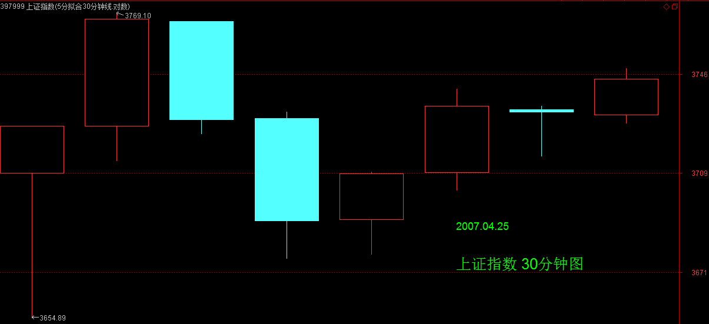
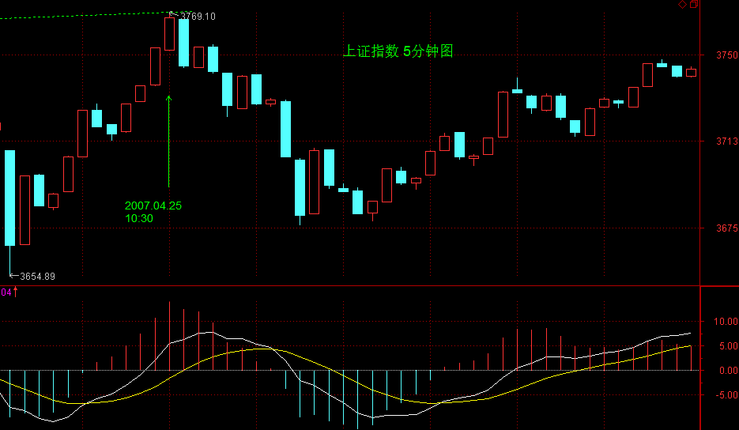
下午那下探，对于短线对冲的，就像送钱一样。【韶山映山红】冲高没有线段间盘整背驰，线段内部笔级别的盘整背驰的小转大导致下跌，然后小转大的反弹。下午开盘的“那下探”力度背驰太明显了，“就像送钱一样”。】
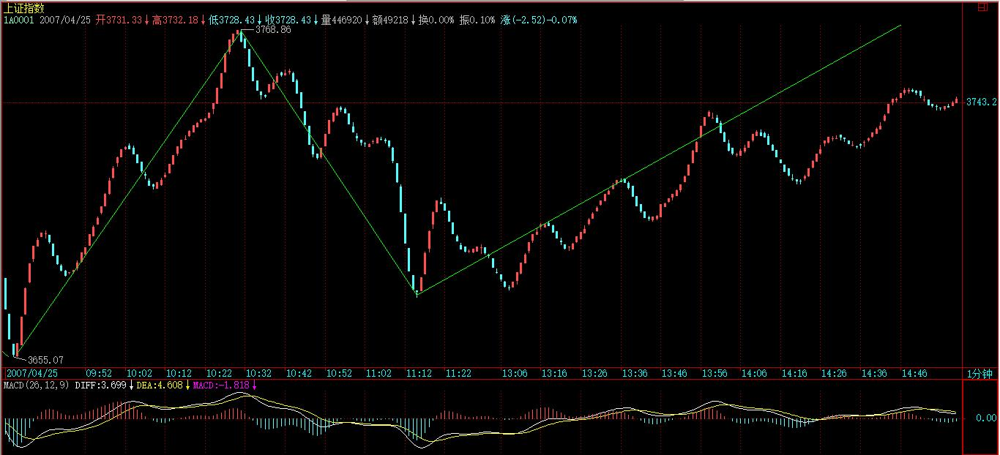
纯技术上，04.24 13:35和04.25 10:30的连线必须突破，否则就会被技术派看成是所谓的喇叭形态，【韶山映山红】“被技术派看成是所谓的喇叭形态”又有什么关系呢？★技术派认为，喇叭形态最常出现在涨势末期，意味者多头市场的结束，常常是大跌的先兆。不管喇叭形向上还是向下倾斜，其含义是一样的。】
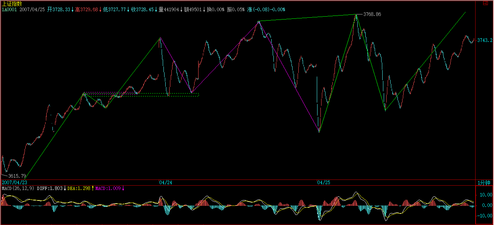
从大点看，从04.24 09:31开始的3689到3745的5分钟中枢延伸什么时候结束，就看明后两天是否形成第三类买卖点了，这一切无须预测，大盘自然告诉你。【韶山映山红】这时候的中枢划分已经调整后移了。】
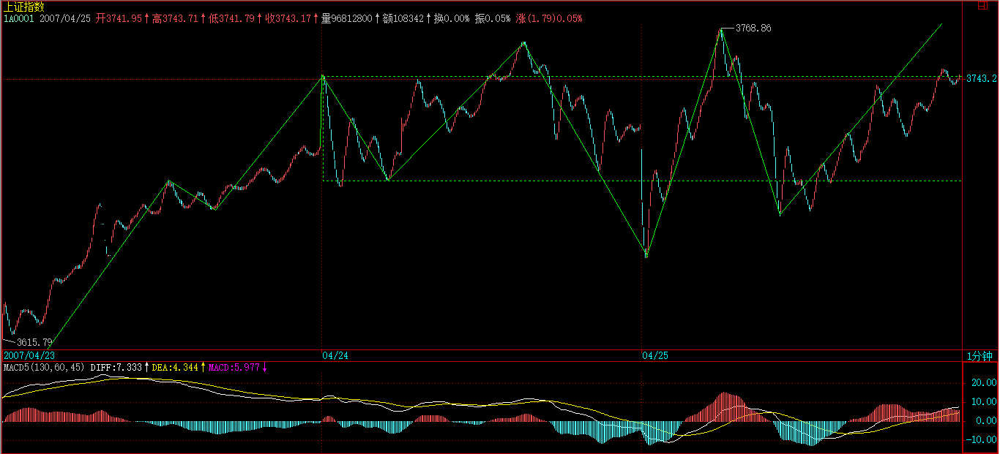
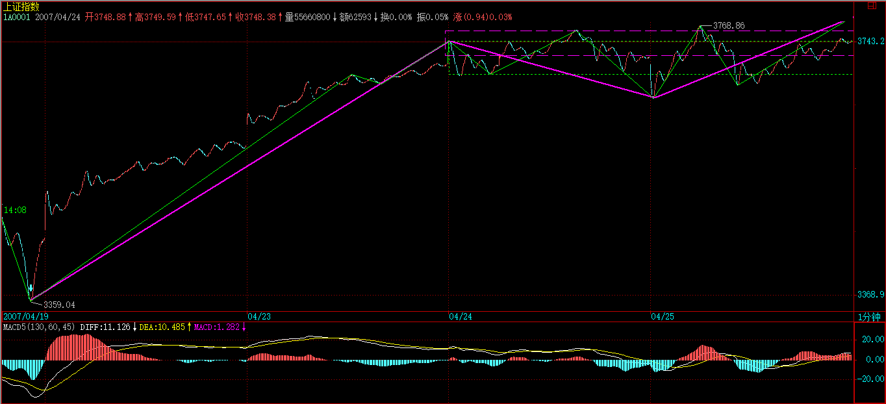
板块方面，昨天已经说了，今天需要一个板块的切换，成分股要重新走起来，这切换还可以，毕竟基金也要面子，51前也需要一个好的市值，做人不能打击面太宽了。
但是，大盘最近一点都不疯狂，反而最近汉奸有点疯狂，自编社论到处流传，还在国外金融报纸上大声漫骂，这种人，该怎么处理，各位可以讨论。
有事，必须先下，晚上9点回来回答问题。再见。
丑的鲁尼战胜帅的卡卡；喜欢的英超战胜讨厌的意假。世界就是如此。
先下，15点看给出当日评论，再见。
2007-4-25 09:06
就算你对本ID的理论只有幼儿园水平，那今天的走势都一定难不到你。一开盘的低开，然后很快拉回3688到3699的前天小中枢，这就意味着，中枢震荡依然继续，没什么大问题。前三30分钟走出来后，这平衡市的形态以及震荡幅度就基本确立了，今天属于最平衡市那种，前三30分钟就确立全天高、低点，下午那下探，对于短线对冲的，就像送钱一样。
纯技术上，04.24 13:35和04.25 10:30的连线必须突破，否则就会被技术派看成是所谓的喇叭形态，从大点看，从04.24 09:31开始的3689到3745的5分钟中枢延伸什么时候结束，就看明后两天是否形成第三类买卖点了，这一切无须预测，大盘自然告诉你。
板块方面，昨天已经说了，今天需要一个板块的切换，成分股要重新走起来，这切换还可以，毕竟基金也要面子，51前也需要一个好的市值，做人不能打击面太宽了。
但是，大盘最近一点都不疯狂，反而最近汉奸有点疯狂，自编社论到处流传，还在国外金融报纸上大声漫骂，这种人，该怎么处理，各位可以讨论。
有事，必须先下，晚上9点回来回答问题。再见。
2007-4-25 15:25
匿名] 古代 2007-04-25 15:42:12
老师晚上...切尔西VS利物浦
==
对，老冤家。
2007-4-25 21:05
[匿名] 股虱 2007-04-25 19:11:47
禅MM，有个问题困扰我很久了：
大多股票的趋势都有2个中枢，在第二个中枢后背驰中终结，但如果第二个中枢后的趋势不背驰，是否还要：1、等待新的中枢生成，同时黄白线靠拢0轴，再次比较是否背驰？2、假如趋势是a+A+b+B+c+C+d，这时候是比较d和c还是d和b？或是其他？
==
在该级别不背驰，就面临两种选择：一、形成新中枢。二、小级别转大级别【韶山映山红】不管是哪个中枢，只要趋势不背驰，就有两种可能：１，形成新中枢，原趋势延伸。２，小转大导致转折，形态上可以和趋势背驰一样，只是动力分析不一样。】
2007-4-25 21:13
[匿名] 买进容易卖出难 2007-04-25 09:35:04
买进容易卖出难，选股容易，知道什么时候该进，不知道什么时候该卖出。头痛！【韶山映山红】总怕卖亏了的心态。】
==
道理是一样的，如果不习惯，那把走势图反过来，有些软件是可以这样的，那看到买点就去卖。
当然，最终的解决，还是要对买点卖点平等，不能有偏好，任何级别的图形，其结构是一样的。
2007-4-25 21:19
[匿名] 新浪网友 2007-04-25 21:17:11
请教禅女，416今起停牌是为何？与民生的重组有关吗？请赐教！盼
【韶山映山红】000416健特生物，生产脑白金。2008-01-06变更为华馨实业，2008-12-30变更为民生投资，2014-04-14变更为民生控股。】
==
近日有关网络媒体和市场出现健特生物资产重组传闻，致使公司股票交易价格出现异常波动。按照《深圳证券交易所上市规则》的要求，公司股票于2007年4月25日起停牌，待有关澄清公告刊登后复牌。
2007-4-25 21:21
[匿名] 阿Q 2007-04-25 21:19:14
老师，一直以来操作上总是产生这样的心理：明明判断出来是一个顶背驰，但是又觉得级别不够，结果小级别的顶背驰演化成大级别的顶背驰，到手的短差做不成。有没有什么强制性的法子让自己坚决的走掉吗？
==
这很简单，例如你是30分钟级别操作的，一个5分钟级别的背驰是在你操作的忍受范围内的，5分钟背驰，正常情况下只引发对5分钟走势类型的修正，一旦该修正的第一中枢级别大于5分钟，那就要先出来，因为这里至少要形成30分钟的盘整，这也是为什么需要第二类卖点的原因。
【韶山映山红】30分钟的操作级别，在一个30分钟级别的一卖就要出，不管这个一卖是本级别背驰，还是小转大追认的名义一卖。
本级别背驰肯定是不能忍受的，因为就是一卖本尊。
次级别背驰呢？5分钟走势自己内部的背驰，当然完全在忍受范围内。5分钟的线段类走势的背驰呢？那就是另外一回事了。
“5分钟背驰，正常情况下只引发对5分钟走势类型的修正，”也就是说，这里说的是5分钟走势自己内部的背驰，并没有5分钟的线段类走势的背驰，所以只是一个修正，正常情况下不会回到前高，也就没有“该修正的第一中枢级别大于5分钟”的情况。
一旦跌破前高形成30分钟中枢，那就视为小转大了，除非再次非盘背的上涨，否则，不新高或新高盘背就是二卖了。
还有一种情况，就是5分钟的修正没有跌破前高形成30分钟中枢，而是那个修正自己变成了30分钟走势，那就不是二卖救命，而是类二卖甚至三卖救命了。
如果这个5分钟走势自己内部的背驰，同时还叠加5分钟线段类背驰，那就又成了盘整一卖，还是30分钟级别的一卖本尊。这种情况应该不是这段文字想要表达的。
这里说“至少要形成30分钟的盘整”是什么形态，为什么形成30分钟盘整就不行？因为这时候不知道这个30分钟盘整是否会成为原趋势的延伸，相反，这是30分钟的中阴中枢，而且是小转大形成的中阴中枢，之后的二卖如果不接着盘背，就会形成转折。所以这个当下看不到中阴中枢出三买的迹象，只看到震荡延伸或者出三卖转折，所以“至少要形成30分钟的盘整”，作为30分钟操作级别就要先避开。】
精细点的以后会说到。
2007-4-25 21:26
[匿名] 无限 2007-04-25 10:09:09
早晨好，缠m
俺也希望人民币不升值来吸光世界的资金，挖空美国的金库，从而让美国的美元泡沫彻底破灭，但是我想到另一个问题。国与国的较量，不光是货币经济，还有政治，军事。如果人民币总是保持不升值，后果可能是狗急跳墙势的美国反扑。战争，将是最后的武器，而且是不可避免的要加在中国头上了。
只需要一场战争，美国不需要自己亲自出场，随便鼓动一个印度，日本，甚至越南的，就能把中国拖下水，而且让人民币变相的失去魅力。
我想，央行的大老爷们也许会脑袋进水，但是国家领导人不会那么耳朵软的，一定要通盘考虑。
中国从江时代的面团，要变成胡主席的铁板，甚至是缠m希望的磁铁，需要过程，需要风格的逐渐蜕变。
俺考虑得还不够充分，就先掰掰到这儿吧
==
其实升不升问题都不大，升了，必须有相应的应对，像目前碰到的问题，都是必然会出现的，但相应的应对根本就没有，有的都是些被动的毫无战略目的的瞎搞，套几个西方经济学的公式就可以央行了，脑子真是锈了。
2007-4-25 21:34
[匿名] 睬睬妹妹 2007-04-25 21:27:17
妹妹好,买点买,卖点卖.说着容易做着难!做精准了难上加难!不断练习中!
==
先从大级别开始，别一开始就玩1分钟、5分钟的，这样要求精确度高，而且对交易通道要求也高。开始，最少应该按30分钟操作。
2007-4-25 21:36
[匿名] 新浪网友 2007-04-25 21:33:39
如果能够利用资金不断买卖股票盈利，为什么还有降低持股成本至0，并持有到牛市结束？这样不是会浪费资源，降低效率？请教
==
如果你只有10万元，当然没必要这样，但如果你有10亿，那当然就要这样。资金大了，怎么可能整天换来换去？而且，换股需要的精确度高，对操作时间与通道都要求高。
本ID说的是一种终极的方法，任何人，资金增长到一定规模后，都需要这样。这也是为什么很多人到一定规模后会碰到瓶颈的重要因数。
【韶山映山红】满仓操作的资金使用率高，收益也能高一些，前提是有能力每一次都正确的操作。盈亏同源，一旦出现操作失误，损失也更大一些，小到丧失筹码，大到危害本金，甚至可能导致丧失翻盘的机会。所以，操作风格稳健保守的小资金也可以用这样的方法。】
2007-4-25 21:42
[匿名] 新浪网友 2007-04-25 21:41:07
楼主：这两天778好像欲上不能，你能分析一下它有什么好吗
==
这里的规矩是，本ID那14只股票，本ID是不当评论员的，否则本ID就三合一，裁判、评论、球员一起了。当时说这14只，原因当时就说过，是为了大家能安心学习，让大家买了，就存起来，不费劲，又学东西有来钱，可惜，估计所有都是跑出跑进，能从本ID说那天起拿到现在的，大概没有几个。
999估计还有点人能从6元拿到现在，777能从8元多、600432能从20，416能从3元拿到现在的，估计就没有了，其他就更不用说了。
2007-4-25 21:50
[匿名] 你的样子 2007-04-25 21:48:11
老大有个问题想请教，成本成为0是说股票市值涨了1倍，卖掉一半还是，做短差做成软件上显示成本为零？先买后卖软件上显示的成本是越来越高的，只有先卖后买才能把软件上显示的成本降下来。
==
能弄短差成0是最好的，这是最终要求，因为没人能预测那股票一定能涨一倍后几倍，所以那种等一倍的方法，不一定完全实用。
当然，如果真1倍了，如果你出来的钱能找到更好的选择，当然可以先抛到成本0，如果没有，当然可以继续短差，但依然不动，这关系的是资金利用率的问题。
成本为0后，就要赚筹码，直到特大级别出现卖点。【韶山映山红】先防范风险，后谋求收益。】
2007-4-25 21:54
[匿名] 无限 2007-04-25 10:09:09
早晨好，缠m
俺也希望人民币不升值来吸光世界的资金，挖空美国的金库，从而让美国的美元泡沫彻底破灭，但是我想到另一个问题。国与国的较量，不光是货币经济，还有政治，军事。如果人民币总是保持不升值，后果可能是狗急跳墙势的美国反扑。战争，将是最后的武器，而且是不可避免的要加在中国头上了。
只需要一场战争，美国不需要自己亲自出场，随便鼓动一个印度，日本，甚至越南的，就能把中国拖下水，而且让人民币变相的失去魅力。
我想，央行的大老爷们也许会脑袋进水，但是国家领导人不会那么耳朵软的，一定要通盘考虑。
中国从江时代的面团，要变成胡主席的铁板，甚至是缠m希望的磁铁，需要过程，需要风格的逐渐蜕变。
俺考虑得还不够充分，就先掰掰到这儿吧
==
缠中说禅 2007-04-25 21:34:52
其实升不升问题都不大，升了，必须有相应的应对，像目前碰到的问题，都是必然会出现的，但相应的应对根本就没有，有的都是些被动的毫无战略目的的瞎搞，套几个西方经济学的公式就可以央行了，脑子真是锈了。
---------
[匿名] 无限 2007-04-25 21:51:37
谢谢，老大能回复
俺们小群中的同学们，想问问，如果老大是证监会主席，您认为如何做比较好（能回答具体点吗？，谢谢）
谢谢老大，俺们群全体同学向你致敬
==
至少到现在为止，证监会是表现最好的，如果连他们都顶不住，那在各部门的利益平衡中，早出问题了。所以能有今天，山东人还是值得大大表扬的。就算最终不能支持住，也应该得到理解。
2007-4-25 21:58
[匿名] 萝卜白菜 2007-04-25 21:57:26
请问缠主
从大点看，从04.24 09:31开始的3689到3745的5分钟中枢延伸什么时候结束，就看明后两天是否形成第三类买卖点了，这一切无须预测，大盘自然告诉你。
我个人认为:从04.24 09:31开始的3689到3745的5分钟中枢应该是09:31--10:25吧.不知我判断正确否? 那不只是一段吗,怎么成了中枢了呢?
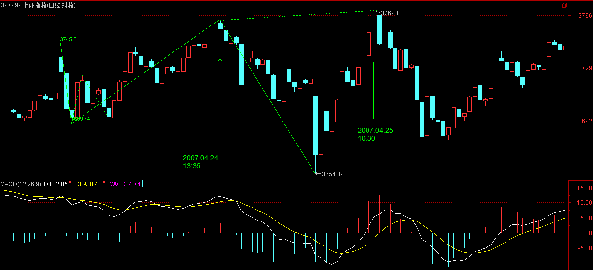
==
那是第一段，但这第一段完全包括在后面第三段里，所以三段的区间就是一段的区间，本ID说的是该中枢的区间。【韶山映山红】五分钟中枢区间是[3689，3745]，同时这就是第一个下跌笔的区间。】

2007-4-25 22:04
[匿名] 新浪网友 2007-04-25 22:04:11
老大，碰到棘手的问题了。002129，您给个操作建议吧，帮忙分析一下。【韶山映山红】002129中环股份。】
==
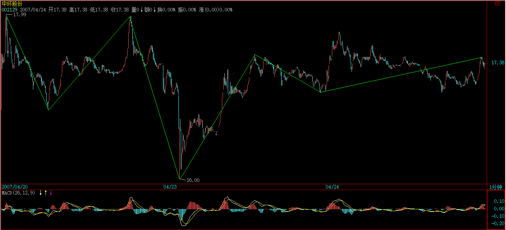
这是一个典型的中枢震荡，和大盘目前的情况是一样的，就是先出第三买点还是卖点的问题。
中枢震荡的节奏是任何离开中枢的，只要力度不足以摆脱中枢引力，就会拉回中枢里，但这相应操作就可以。
关于具体的，可以看前面中枢震荡的课程。
2007-4-25 22:10
[匿名] 袖手旁观 2007-04-25 22:00:51
缠mm，如果把中枢比作引力中心，脱离引力中心的唯一标准是超过逃逸速度，逃逸速度的唯一决定因素是引力中心的质量。走势力度类似速度？中枢的逃逸速度可计算吗？
[匿名] 袖手旁观 2007-04-25 22:08:40
再加一句，以一个标准趋势a+A+b+B+c为例，根据背驰定理，c的力度比b大则新生中枢C，比b小则转折，这里b的力度似乎就类似于B的逃逸速度的标尺？
==
可以计算，但没必要计算，否则还要自己设计程序，太麻烦。用MACD就很好用。
另外，c的力度比b大则新生中枢C，不一定必然产生新中枢，有一种特殊的情况，就是小级别转化成大级别。
当然，站在某种程度上，也可以说是产生新中枢，只是这中枢最后和原来的中枢有所重合，而真正的趋势中的新中枢，是不能够和前同级别中枢有任何重合的。【韶山映山红】趋势不背驰而小转大的结构，(a+A+b+B+c)+C，（a+A+b）+（B+c+C）。趋势背驰最后一个中枢扩张升级的结构，(a+A+b)+B~，没有形成独立的C。】
2007-4-25 22:14
[匿名] 小凤 2007-04-25 22:11:35
缠女王您好,我想请教一下,我是新手,如何才能学到您的皮毛呢?要从那里开始学.谢谢了
==
从课程开始。先把中枢与走势类型之间的递归定义搞清楚，逐步来。
2007-4-25 22:17
[匿名] 请问博主基金 2007-04-25 22:17:03
博主,我没什么时间炒古!请问现在买基金好吗?买什么好呢?能不能介绍个具体的我就不用费心思了!
==
最简单，就去买和指数直接正相关的基金，这样，至少赶得上指数。
当然，最安全是一个较大级别调整后去买。
2007-4-25 22:19
[匿名] 你的样子 2007-04-25 22:16:49
老大今晚看球么？我也熬夜看球，和老大同节奏一会，呵呵。
==
当然。所以本ID要下去休息了。
先下，再见。
2007-4-25 22:20
本课目录
教你炒股票48：暴跌，牛市行情的一夜情《货币战争和人民币战略》续六：央行，脑子别进水。